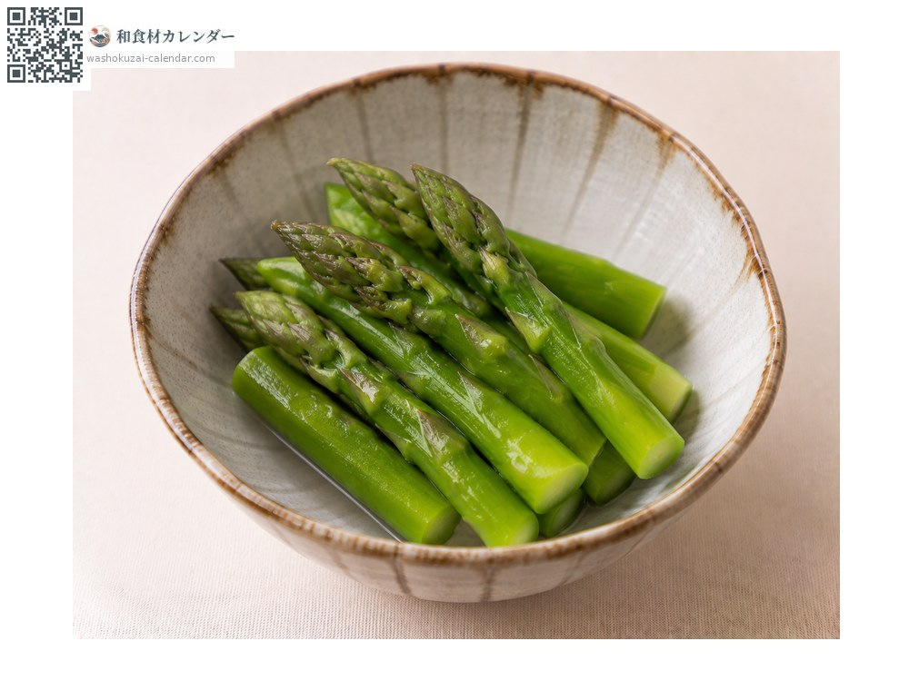
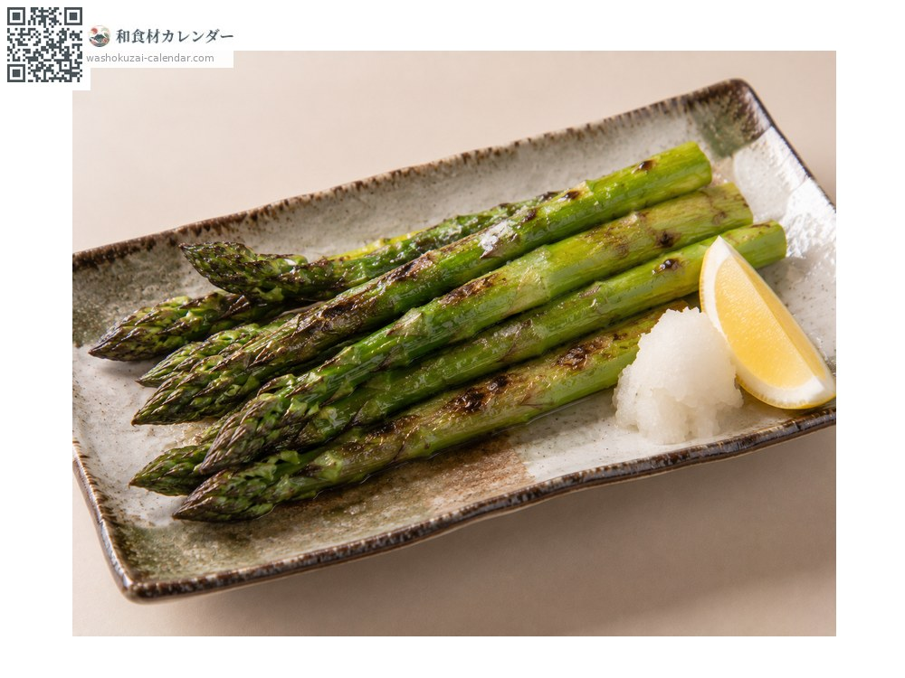
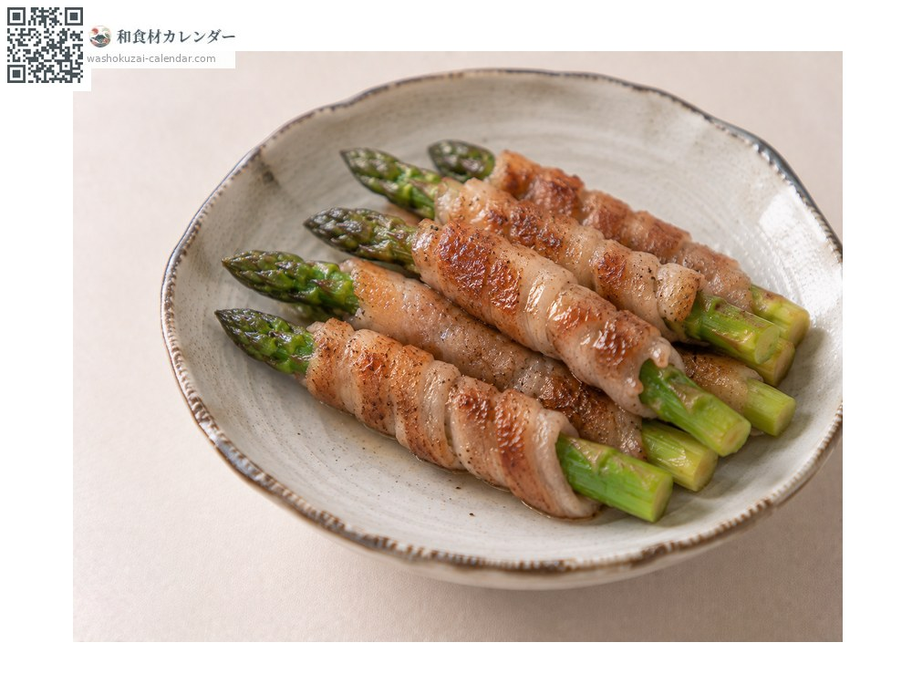
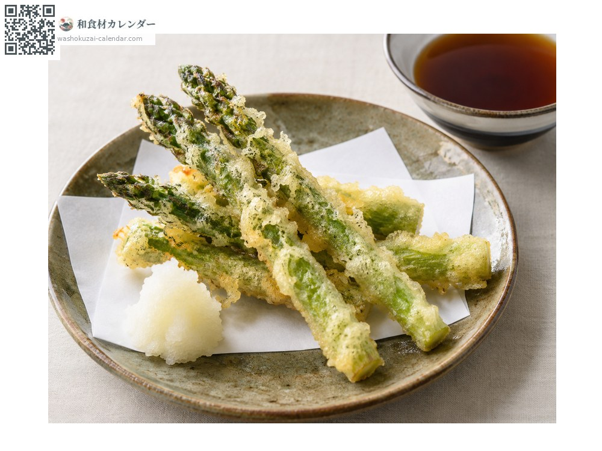

蔬菜
芦笋
アスパラガス あすぱらがす
别名asupara
应季时期为4月、5月、6月

应季时期
1月
2月
3月
4月
5月
6月
7月
8月
9月
10月
11月
12月
应季有供应
烹饪方法

盐水煮
粗的先削掉根部外皮。配蛋黄酱或鸡蛋。

烧烤
用平底锅或炭火烤，甜味更明显。

培根卷烧
经典的组合。

天妇罗
面衣要薄，快速炸。
挑选方法
笋尖紧实挺直、切口新鲜。越粗的越柔软甘甜。
保存方法
直立放入冷藏。横放的话笋尖会想往上翘而弯曲。
主要产地
小知识
不照阳光栽培就成了白芦笋。同一品种会因栽培方式而改变颜色。